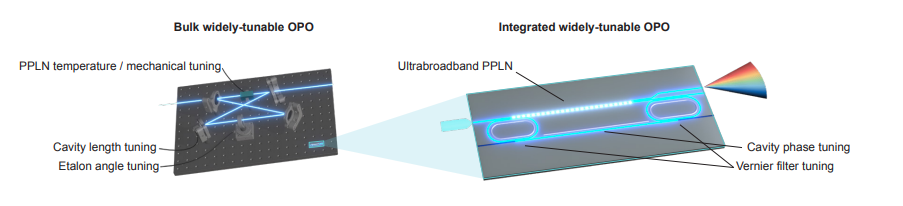

The mid-infrared (mid-IR) spectral range from 2-20 um contains the strong vibrational signatures of molecules, making it an attractive window for chemical, biological, and environmental sensing applications. These rich sensing applications drive the demand for more efficient, compact, and broadband mid-IR light sources. Our mid-IR team focuses on harnessing integrated nonlinear optical devices to create broadband, compact mid-IR sources through frequency conversion of near-infrared and telecom lasers. Key recent results include: chip-based mid-infrared difference frequency generation (DFG) [1,2], octave-spanning optical parametric oscillators (OPO) with methane and ammonia spectroscopy [3], and electrically-tunable mid-IR OPO [4].